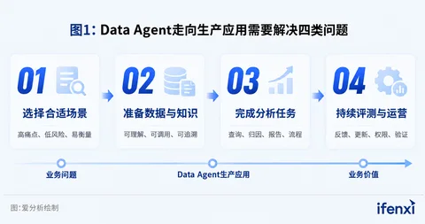
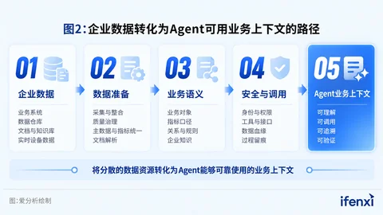
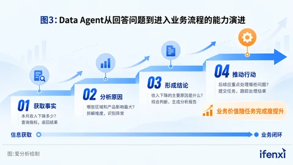
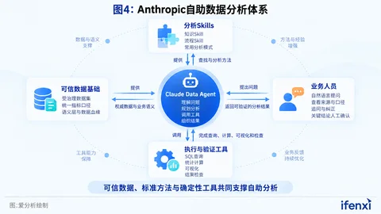
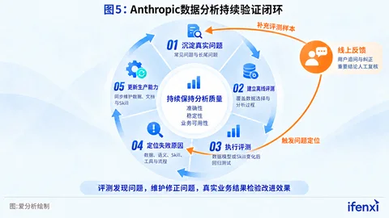
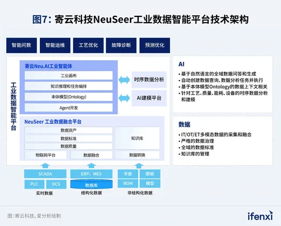

爱分析2026 Data+AI应用实践报告：Data Agent落地路径
DataHot 速览
爱分析发布《2026爱分析·Data+AI应用实践报告》，聚焦通用Data Agent与工业Data Agent两类市场，围绕场景选择、数据与知识准备、任务执行和持续运营提炼落地关键。报告引用Anthropic实践：其内部约95%的业务分析查询已由Claude自动完成，整体准确率约95%，背后依赖权威数据集、分析Skills、持续评测与反馈闭环。报告还结合Anthropic自助数据分析与某新能源企业智能运维实践，提供Data Agent从试点走向生产应用的建设路径。
为什么值得关注：报告把Data Agent从演示到生产的关键环节拆解为场景选择、数据与知识准备、任务执行和持续运营，并给出Anthropic高自动分析准确率案例，适合正在规划ChatBI/分析Agent落地的数据团队参考。
本文目录 15 节
- 1、报告综述
- 1.2 Data Agent走向生产应用，需要回答四类问题
- 1.3 聚焦两类Data Agent落地路径
- 2、Data Agent从试点走向规模化应用四部曲
- 2.1 Data Agent落地应从高痛点、低风险、易衡量的场景切入
- 2.2 Data Agent需要可理解、可调用、可追溯的数据与业务知识
- 2.3 Data Agent需要从回答问题走向完成分析任务
- 2.4 Data Agent需要通过持续评测与运营保持效果
- 3、通用Data Agent市场
- 3.1 通用Data Agent项目落地的关键成功要素
- 案例1: Anthropic：用可信数据与验证闭环支撑自助数据分析
- 4、工业Data Agent市场
- 4.1 工业Data Agent项目落地的关键成功要素
- 案例2: AI接管场站运营，某新能源企业将问题发现到解决时间缩短60%
- 5、结语
原文
Anthropic内部约95%的业务分析查询已由Claude自动完成，整体准确率约为95%。支撑这一结果的，既有大模型能力，也有权威数据集、分析Skills、持续评测与反馈闭环。这个案例揭示了Data Agent进入生产环境的关键：企业需要让AI找到正确的数据、采用正确的方法，并持续交付可验证的业务结果。
《2026爱分析·Data+AI应用实践报告》聚焦通用Data Agent与工业Data Agent两类市场，围绕场景选择、数据与知识准备、任务执行和持续运营，提炼项目落地的关键成功要素，并结合Anthropic自助数据分析与新能源企业智能运维实践，为企业提供可参考的建设路径。
1、报告综述
当企业管理者提出，本月销售收入为什么下降？Data Agent需要完成一系列工作：识别销售收入的业务口径，找到可信数据，排除异常因素，完成归因分析，并给出可以回溯的结果。任何一个环节缺失，都可能生成一份看似完整、却无法用于决策的答案。
企业由此发现，模型能力只是起点，Data Agent的业务价值更取决于数据、业务知识、分析工具和运营机制能否协同。
1.1 Data Agent进入业务现场，数据与业务知识成为落地关键
大模型进入企业以来，知识问答、内容生成等应用率先落地。随着企业开始用业务结果检验AI价值，应用需求正在向数据分析、经营决策和任务执行延伸。AI需要处理企业内部的数据，理解指标含义和业务规则，并在授权范围内调用工具完成任务。
这一变化推动Data+AI成为企业智能化建设的重要方向。Data+AI连接数据资产、业务知识和AI应用，使模型能够基于企业自身的经营环境开展分析和行动。其中，Data Agent是Data+AI面向业务应用的重要载体，能够理解用户需求，调用数据和工具完成分析任务。
企业已经积累了大量数据，也建设了数据仓库、数据平台和BI系统，但这些基础并不会自动转化为Data Agent能力。指标口径、数据关系和业务规则，往往分散在平台、报表、文档以及人员经验中。大模型可以生成查询语句，却未必能够找到正确的数据、采用正确的业务口径。应用越接近经营决策和生产运营，这类偏差带来的影响越大。
与此同时，完成一次准确分析只是起点。Data Agent还需要形成符合业务要求的交付物，与企业现有工具和流程衔接，并根据新的数据、规则和用户反馈持续更新。从演示验证走向生产应用，企业面对的是一项覆盖场景、数据、知识、流程和运营的系统工程。
1.2 Data Agent走向生产应用，需要回答四类问题
从试点走向生产应用，企业需要依次处理场景选择、数据与知识准备、任务执行和持续运营。本报告将在第二章展开分析。

图1：Data Agent走向生产应用需要解决四类问题
1.3 聚焦两类Data Agent落地路径
Data+AI覆盖数据管理、业务上下文构建、Data Agent开发与应用等多个环节。《2026爱分析·Data+AI厂商全景报告》已经对Data+AI市场结构和相关厂商能力进行了研究，本报告进一步聚焦应用实践，选择通用Data Agent和工业Data Agent两个市场，研究企业如何将Data Agent投入真实业务。
通用Data Agent主要面向经营分析和自助数据分析场景，服务管理者、业务人员和数据分析人员。它需要降低数据使用门槛，同时保证指标口径、分析过程和结果来源准确可信。
工业Data Agent进入设备运维、故障诊断、工艺优化和生产经营等专业场景，需要处理实时数据、结构化数据和工程资料，并结合工业知识、专业模型和现场工具完成复杂任务。
对两个市场进行对照研究，既能识别Data Agent落地的共性方法，也能呈现不同业务环境对产品能力和实施路径提出的差异化要求。
基于此，本报告首先总结企业推进Data Agent应用时需要关注的关键市场洞察，回答场景选择、数据与知识准备、任务闭环和持续运营等问题；随后分别研究通用Data Agent和工业Data Agent市场，并结合Anthropic自助数据分析实践以及某新能源企业的工业智能体实践，还原Data Agent进入真实业务环境的建设路径与应用成效；最后对Data+AI应用的发展方向进行总结，为企业规划和实施相关项目提供参考。
2、Data Agent从试点走向规模化应用四部曲
Data Agent项目往往可以在短时间内完成演示：用户提出问题，系统生成查询、图表或一段分析结论。真正进入生产环境后，企业需要面对更具体的检验：是否真正解决了业务问题，以及上线后如何保持效果。这些问题前后衔接，构成Data Agent从试点走向规模化应用的完整链条。
基于对Data+AI市场及相关厂商实践的调研，爱分析将影响项目成败的关键环节归纳如下。
2.1 Data Agent落地应从高痛点、低风险、易衡量的场景切入
Data Agent落地首先要确定它应该解决什么问题，后续开发围绕这个问题展开。在项目早期，企业容易从平台能力出发，集中展示自然语言问数、自动生成报告、调用多个工具等功能。可一旦缺少清晰的业务目标，项目上线后便很难回答两个基本问题：业务人员是否愿意持续使用，投入是否带来了可以验证的收益。
适合作为起点的场景，通常具备三个特征。一是业务痛点突出，现有工作需要频繁取数、反复分析或依赖少数专家，响应速度已经影响经营和运营；二是实施风险可控，Agent出现偏差时能够被及时发现和纠正，不会直接造成重大经营或生产损失；三是效果容易衡量，企业能够在项目启动前建立效率、质量、成本或业务结果的基线，并在上线后进行对比。
场景选择还要与企业的数据条件匹配。企业应优先选择数据可获得、任务边界明确、风险可控且便于衡量的场景，并在启动前明确使用者、输入数据、分析步骤、交付结果、人工责任和验收指标。首个项目的目标是验证一项业务任务能否稳定跑通。
2.2 Data Agent需要可理解、可调用、可追溯的数据与业务知识
要回答“本月销售收入为什么下降”，Data Agent首先要确定“销售收入”采用哪一种业务口径。企业内部可能同时存在财务收入、经营收入、含税收入等多种定义，不同部门还可能采用不同统计周期。数据分析师会根据提问者、使用场景和经验选择合适的指标，Data Agent则需要企业把这些判断依据明确地提供出来。如果业务概念与数据实体之间缺少稳定映射，Agent生成的查询虽然可以顺利运行，答案也可能看似合理，但结果未必符合企业实际口径。
这类口径选择过去由分析人员在数据消费过程中完成，Data Agent开始直接调用数据后，企业需要把指标定义、适用场景和校验规则显性化，使治理成果既能支持人使用数据，也能被Agent稳定执行。
第一，核心业务概念需要对应权威数据来源。企业应围绕收入、客户、订单、设备等关键对象统一定义，明确指标计算逻辑、统计范围和适用条件，减少名称相近、口径冲突的数据模型。当Agent检索某个概念时，应该能够优先找到经过治理和确认的数据入口。
第二，数据需要携带足够的业务语义和使用说明。表名和字段名只能描述数据的技术形态，Agent还需要知道一行数据代表什么、哪些记录需要排除、不同数据如何关联、指标适用于什么场景，以及出现异常时由谁负责。数据粒度、血缘关系、更新时间、有效值范围和业务定义等信息，共同构成Agent理解数据的上下文。
第三，数据和知识需要以可调用的方式提供给Agent。企业可以通过语义层、指标平台、数据服务和知识库等能力，为Agent提供受控的数据访问入口；再将成熟的分析方法、业务规则和专家经验封装为Skill或工具，规定Agent应当查询什么、如何分析以及何时停止或请求人工判断。开放更多原始表和历史查询记录只会扩大搜索范围，经过筛选和组织的上下文才能提高使用效率。
第四，数据调用过程需要支持追溯和更新。Agent给出的重要结论应保留数据来源、指标口径和更新时间，帮助使用者判断结果是否可信。数据模型、业务规则或组织职责发生变化后，相关语义、知识和Skill也需要同步维护，避免Agent继续沿用已经失效的分析依据。
因此，建设Data Agent不意味着推倒原有数据治理体系。企业需要在已有数据基础上补齐业务语义、调用接口和持续维护机制，将治理成果转化为Agent可以稳定使用的生产资料。这一转化程度，将直接影响Data Agent分析结果的准确性、可解释性和复用范围。

图2：企业数据转化为Agent可用业务上下文的路径
2.3 Data Agent需要从回答问题走向完成分析任务
明确销售收入口径只是起点。要回答“本月销售收入为什么下降”，还需比较不同时期表现，拆分区域和产品等维度，识别主要影响因素，并将结论整理成会议材料或改进建议。
因此，Data Agent的能力建设需要围绕完整任务展开。从应用深度看，它可以逐步覆盖三个层次：首先是获取事实，根据自然语言需求检索数据并回答明确问题；其次是完成分析，拆解复杂问题，连续调用查询、计算、可视化和内容生成工具，形成符合要求的交付物；再次是衔接业务流程，将分析结果提交给相应人员或系统，支持任务创建、审批流转和结果跟踪。
企业需要为每个场景明确任务边界，包括使用者、触发条件、输入数据、执行步骤、可调用工具、交付结果和责任人。边界越清楚，越容易判断Agent是否完成工作，也越容易定位问题出在需求理解、数据调用、分析方法还是结果交付。
在执行过程中，确定性能力与大模型能力应当合理分工。指标计算、数据校验等对准确性要求较高的环节，可以交由查询引擎、规则引擎和专业模型执行；成熟且重复的分析步骤可以固化为工作流或Skill；大模型主要负责理解意图、拆解任务、选择工具和组织结果。通过这种组合，企业可以减少自由生成带来的不确定性，同时保留Agent处理复杂需求的灵活性。
Agent进入业务流程后，自主程度需要与任务风险相匹配。在信息查询、草稿生成和建议提供等低风险环节，系统可以自动执行更多步骤；涉及重要经营判断、对外发布或设备控制时，应设置数据校验、权限控制和人工确认。企业可以随着效果验证逐步扩大授权范围，避免在项目初期同时承担过高的业务风险和治理成本。
相应地，项目评价也要从单次回答是否准确，扩展到任务是否真正完成。企业既要关注答案准确率和工具调用成功率，也要衡量分析周期缩短多少、人工工作量减少多少、交付物采用率如何，以及后续任务是否被执行。对于能够影响经营或运营结果的场景，还可以进一步观察成本、收入、设备效率等业务指标的变化。
当Data Agent能够稳定连接“发现问题—分析原因—形成交付物—推动任务—跟踪结果”，它才真正进入企业的工作过程，这一闭环也是企业从功能演示走向生产应用的关键标志。

图3：Data Agent从回答问题到进入业务流程的能力演进
2.4 Data Agent需要通过持续评测与运营保持效果
Data Agent也许今天能够准确回答“本月销售收入为什么下降”，但下个月仍可能给出失真的结论。指标口径会调整，数据表和权限会变化，业务规则会更新，用户提出问题的方式也会超出试点阶段的预设。Data Agent上线由此成为持续运营的起点，企业需要不断识别效果变化并修正问题。
持续运营，首先需要一套贴近真实任务的评测体系。企业可以从历史分析任务、典型业务问题和上线后的用户反馈中建立评测集，覆盖需求理解、指标选择、数据查询、计算分析、工具调用和结果表达等关键环节。评测对象既包括最终答案，也包括中间过程，使团队能够判断问题来自数据、知识、模型、工具还是流程配置。
评测指标需要同时反映准确性、稳定性和业务可用性。查询是否成功、计算是否正确属于基础指标；同一问题在相近条件下能否得到一致结果，反映系统稳定性；结论是否被业务人员采用、任务是否按时完成，则决定应用能否产生实际价值。对于“销售收入下降”这类分析任务，还应检查Agent能否持续使用有效口径，识别主要影响因素，并提供可追溯的分析依据。
线上反馈需要转化为明确的改进闭环。企业应记录用户追问、人工改写、结果驳回和工具调用失败等信号，对高频问题进行分类，明确由数据、业务、算法或产品团队负责处理。修正后的数据口径、业务规则和任务流程需要重新进入评测集，防止同类问题反复出现。
运营机制还要覆盖版本和变更管理。当数据模型、知识内容、提示词、模型或工具发生调整时，团队应保留版本记录，并在发布前执行回归测试。对于影响经营决策的关键场景，可以设置抽样复核、异常预警和降级方案，在效果明显波动时及时切换为人工处理。
Data Agent的授权范围可以随评测结果逐步扩大。早期阶段以查询、分析和建议生成为主，团队在积累稳定性数据后，再开放报告分发、任务创建等后续动作。重要决策、对外发布和高风险操作继续保留人工确认，使应用范围扩展与风险控制保持同步。
因此，Data Agent项目需要从一次性交付转向产品化运营。企业通过持续评测发现问题，通过责任分工推动修正，再用真实业务结果检验改进效果，才能让Agent适应不断变化的数据和业务环境，并为规模化复制提供稳定基础。
从场景选择，到数据与知识准备，再到任务执行和持续运营，上述四个环节共同构成Data Agent进入生产环境的落地链条。这条链路具有共性，但不同业务环境对数据类型、专业知识、工具调用和风险控制的要求差异明显。企业需要结合具体市场理解这些要求，才能将通用方法转化为可实施的建设路径。
本报告选择通用Data Agent和工业Data Agent两个市场。前者面向经营管理和自助数据分析，后者进入生产运营和设备运维，面临更复杂的实时数据、工业知识、专业模型和现场流程。下文将分别分析两个市场的关键成功要素，并结合Anthropic与某新能源企业的实践展开。
3、通用Data Agent市场
通用Data Agent在演示中回答一个指标并不困难，项目进入真实业务后，难点会迅速显现：同一个问题对应多种口径，分析过程需要连续调用多类工具，结果还要经得起业务人员复核。项目能否落地，取决于企业是否把可信数据、分析方法、验证机制和运营责任组织成一套可持续运行的体系。
3.1 通用Data Agent项目落地的关键成功要素
通用Data Agent应以完整分析任务为建设单元。项目团队先明确指标口径、分析维度、交付结果和验收标准，再据此配置数据、Skills与工具，避免从问答功能出发堆叠能力。
准确分析依赖经过筛选的可信上下文和可执行的方法。企业需要确定权威数据集，统一指标定义，补充数据粒度、适用范围、更新时间、血缘与权限；同时把需求澄清、数据选择、归因和结果检查固化为Skills，并将计算、统计检验和可视化交给确定性工具。
结果必须可追溯，运营责任必须明确。重要结论应展示数据来源、指标口径和关键过程；业务、数据、产品与算法团队共同维护评测集，针对模型、数据和Skills变化进行回归测试。
案例1: Anthropic：用可信数据与验证闭环支撑自助数据分析
据Anthropic于2026年6月公布的内部实践，其约95%的业务分析查询已由Claude自动完成，整体准确率约为95%。这一结果建立在数据基础、权威信息源、Skills和验证机制的共同作用之上。Anthropic的实践显示，把大模型接入数据仓库只能解决查询执行问题；要让业务人员获得可用结论，企业还需要控制Agent的数据选择范围、规定分析路径，并持续检验结果。

图4：Anthropic自助数据分析体系
业务问题：生成正确的SQL，仍可能得到错误的业务答案。Anthropic在实践中将错误主要归因于三类问题：业务概念对应多个数据实体，数据源和业务定义持续变化，以及正确资料存在却未被Agent找到。例如，用户询问活跃用户数量时，Agent需要判断哪些行为代表活跃、采用多长统计周期以及是否排除异常用户。任何一项判断出错，查询都可能正常运行，结果也可能具有迷惑性。
建设路径一：缩小数据选择空间，让核心概念指向权威来源。Anthropic为收入、用户等核心概念建设受治理的数据集，并减少定义相近的重复模型。Agent优先通过语义层调用统一指标；语义层无法覆盖问题时，再结合数据血缘和模型关系寻找合适的数据表。表和字段的粒度、适用范围、排除条件、更新时间及责任人也被作为重要上下文维护。相比之下，直接向Agent开放数千份历史SQL，对准确率的提升不足一个百分点，说明资料数量无法替代结构化的数据导航。
建设路径二：用Skills沉淀分析人员的查找与分析方法。Anthropic将Skills分为相互配合的两类：知识Skill负责把Agent引导至特定业务域的权威资料，流程Skill规定澄清问题、选择数据源、执行查询和检查结果的步骤，并封装留存、漏斗、比率拆解等常用分析模式。内部评测显示，缺少Skills时，Claude回答数据分析问题的准确率不超过21%；加入Skills后，整体准确率稳定超过95%，部分业务域接近99%。
建设路径三：用离线评测和线上反馈持续发现错误。Anthropic基于常见业务问题和长尾问题建立离线评测，并将用户纠正转化为新的测试样本。每次数据模型或Skill发生变化，相关评测都会重新执行。在线上，分析结果展示所用信息源的可信层级、数据新鲜度和模型责任人；对于提交给管理层的重要结论，仍保留人工确认。

图5：Anthropic数据分析持续验证闭环
持续维护被纳入数据工程流程。Anthropic曾观察到，Skill缺少维护时，离线准确率在一个月内由约95%下降至约65%。为解决这一问题，团队将数据模型、语义层、参考文档和Skill放在相互关联的维护流程中；数据模型变更时，同步检查相关Skill和文档，避免Agent继续使用已经失效的分析依据。
应用成效与边界：自动化释放了数据团队精力，但高准确率仍不等于消除错误。Claude承担大量重复查询后，Anthropic的数据科学团队可以将更多时间投入因果分析、预测和机器学习等工作。与此同时，企业仍需面对答案错误但未被用户发现的“静默失败”。来源提示、重点指标的日常校验和关键结论的人工复核，仍是控制这类风险的重要手段。
爱分析认为，Anthropic案例验证了通用Data Agent项目的核心矛盾：分析质量主要取决于Agent能否找到正确且及时的数据，并按照经过验证的方法完成任务。企业可以从少量权威数据集、重点业务域的分析Skill和一组可重复执行的评测问题起步，再根据真实使用中的错误逐步扩展。
资料来源：Anthropic，《How Anthropic enables self-service data analytics with Claude》，2026年6月3日；爱分析整理。
4、工业Data Agent市场
同一台设备出现功率下降，原因可能来自设备性能退化、环境变化、传感器异常、控制策略或生产计划。工业Data Agent要给出可执行的判断，需要同时理解设备、工艺、数据关系和现场约束，并调用专业分析工具完成验证。工业场景的项目建设因此要在数据与知识基础之上，进一步解决专业模型协同、业务闭环和安全边界问题。
4.1 工业Data Agent项目落地的关键成功要素
项目需要围绕具体工业问题组织建设范围。设备运维、能耗分析、质量控制和工艺优化涉及不同数据、知识与责任主体，宽泛的“工业智能体平台”难以直接形成验收标准。企业应先明确要识别什么异常、分析哪些原因、输出何种建议，以及建议由谁确认和执行，再据此确定数据接入、模型开发和流程改造范围。对于早期项目，经营分析、设备健康评估和辅助诊断等能够保留人工判断的场景，更有利于验证完整链路。
多源工业数据需要围绕业务对象建立关联。工业数据分散在SCADA、PLC、DCS、MES、ERP等系统中，还包括维修记录、操作手册、工程图纸和专业模型。同一设备的实时状态、历史故障、工艺位置和经营影响通常采用不同编码和数据结构。企业需要以设备、工艺、物料、组织和指标等对象为主线，建立跨系统的标识映射与语义关系，使Agent能够找到与当前问题相关的数据，并理解数据在生产流程中的含义。
工业专家经验需要与专业小模型共同封装为可调用能力。通用大模型能够理解问题和编排任务，但设备异常检测、功率曲线评估、能耗计算和故障识别等工作，依赖确定的算法与行业经验。项目团队可以将诊断步骤、适用条件和处理规则沉淀为Skill，将时序分析、机理计算和预测模型封装为工具，由大模型根据场景选择并组合调用。专家的作用也随之从逐次处理问题，转向定义规则、校验结果和维护方法。
Agent需要嵌入从发现问题到现场处理的业务闭环。工业应用的价值通常产生于后续行动。Agent识别异常后，还要结合历史记录和专业知识分析原因，形成处理建议，并与工单、巡检、备件或生产管理流程衔接。企业应明确每一步的输入、工具、责任人和完成状态，使分析结论能够进入现有运营体系，并通过处理结果反向验证诊断是否有效。
自主执行范围需要根据业务风险和现场条件分级开放。数据整理、异常筛查和报告生成可以采用较高程度的自动化；故障诊断和维护建议需要专业人员复核；涉及设备控制、生产参数调整和重大经营决策的动作，应设置严格权限、规则校验和人工确认。随着系统积累稳定运行记录，企业可以逐步扩大低风险环节的自动执行范围。
系统架构要适应工业现场对实时性、稳定性和安全性的要求。部分任务可以在云端或中心平台完成，接近设备控制的任务则可能需要边缘侧处理，以降低网络波动和响应延迟的影响。项目设计还应考虑海量时序数据的处理性能、工业网络隔离、数据权限以及故障时的降级机制。无论采用何种部署方式，Agent的每次数据调用、模型判断和任务执行都应保留记录，支持追溯和审计。
持续运营需要同时维护数据、知识、模型和流程。设备更新、工况变化和维修经验积累都会改变原有判断依据。企业应将现场人员对诊断结果的确认、驳回和补充信息纳入反馈闭环，持续更新对象关系、知识规则、专业模型和Skill，并用典型故障及历史任务进行回归验证。工业Data Agent由此才能从单次项目交付，转化为能够随生产环境演进的运营能力。
工业Data Agent落地的核心，是把工业数据、专家知识、专业模型和现场流程组织成一条受控的任务链。某新能源企业与寄云科技的实践，展示了这条任务链如何覆盖经营分析、设备运维和故障诊断，并形成从发现问题到现场解决的业务闭环。
图6：工业Data Agent从数据感知到现场执行的受控闭环
案例2: AI接管场站运营，某新能源企业将问题发现到解决时间缩短60%
随着新能源装机规模持续增长，企业运营管理范围不断扩大，场站数量快速增加，设备运行数据、经营管理数据以及现场运维数据呈指数级增长。与此同时，行业竞争也从资源获取和项目建设逐渐转向运营效率竞争。如何充分释放数据价值、提升发电收益和运营效率，成为新能源企业关注的核心议题。
在这一背景下，越来越多企业开始探索Data+AI融合应用，希望借助大模型和智能体技术提升经营决策效率和设备运维水平。然而，由于工业场景数据复杂、专业知识门槛高、业务流程链条长，AI在工业领域的落地始终面临诸多挑战。
某新能源企业联合寄云科技，通过建设新能源智能运维与分析决策智能体平台，打造覆盖经营分析、设备运维和故障诊断的一体化AI智能体体系，实现“从发现问题、分析原因到现场解决”业务闭环，为新能源行业Data+AI应用提供了具有代表性的实践样本。
01 业务快速扩张背后，新能源运营面临新的管理挑战
作为新能源项目开发、投资和运营管理平台，该企业在全国十余个省市运营近百个工商业分布式及集中式光伏项目。
随着业务规模不断扩大，企业逐渐积累起海量经营数据与设备运行数据。然而，数据规模的增长并未自动转化为管理效率提升，企业在经营分析和设备运维领域面临诸多现实挑战。
首先是经营分析效率不足。
企业经营分析涉及多个业务场景、多种分析模板以及来自不同系统的数据来源。长期以来，大量经营报表依赖人工汇总、统计和分析，相关人员需要每天从多个系统中提取数据并形成报告，不仅工作量巨大，而且容易出现统计偏差。
对于中高层管理者而言，获取关键经营指标同样存在障碍。传统方式下，管理层需要依赖下属准备报表，或者通过BI系统逐层查询数据。由于分析流程复杂、数据更新存在滞后，管理层难以及时掌握企业经营动态，影响决策效率。
其次是设备运维效率有待提升。
新能源场站每天会产生大量SCADA和物联网告警信息。虽然系统能够发现异常，但无法自动判断问题的重要程度，更难以识别异常背后的根本原因。面对海量告警，运维人员往往需要投入大量时间进行人工筛查和分析，重大问题容易被淹没在告警信息中。
此外，设备性能评估与故障诊断高度依赖专家经验。
传统设备健康评估主要依靠人工抽检和经验判断，不仅覆盖范围有限，而且难以及时发现设备性能退化等隐性问题。对于复杂故障场景，不同设备特征、运行工况和环境因素往往相互耦合，故障分析高度依赖资深专家的经验积累，知识难以标准化沉淀和复制，导致故障定位效率和运维响应能力受到限制。
面对上述挑战，企业意识到，仅依靠传统数字化工具已难以满足未来运营需求，需要构建能够理解业务、分析问题并辅助执行的智能化能力体系。
02 构建新能源AI智能体体系，实现运营闭环升级
针对经营管理和设备运维中的实际问题，该企业联合寄云科技打造新能源智能运维与分析决策智能体平台。
与传统AI助手不同，该平台不是简单接入大模型，而是在企业数据基础之上构建覆盖经营分析、数据分析和现场运维的多智能体协同体系，形成“发现问题—分析原因—现场解决”的完整业务闭环。
面向管理层：让AI帮助发现问题
在经营管理场景中，企业构建了经营指标分析师智能体。管理者无需再依赖传统报表或复杂BI系统操作，只需通过自然语言交互，即可快速获取企业经营情况。
例如，管理层可以直接询问：
- 本年度风电、光伏和储能项目发电完成情况如何？
- 各省装机容量增长情况如何？
- 哪些区域发电效率低于预期？
- 哪些场站出现明显发电损失？
系统能够自动完成数据检索、分析和展示，并支持进一步钻取数据来源，帮助管理者快速发现经营异常和潜在风险。
面向业务人员：让AI帮助分析问题
针对数据分析人员和业务专家，平台构建了智能分析能力。通过数据导入、查询、清洗和分析工具，业务人员能够快速验证经验判断，分析业务规律，并将分析结果沉淀为企业知识资产。
过去需要跨部门协调、多轮分析才能完成的问题，现在可以通过智能体快速完成初步分析和验证。
面向运维团队：让AI帮助解决问题
针对新能源场站设备运维场景，平台进一步构建智能运维智能体。
系统能够结合设备运行状态、历史维修记录以及知识库内容，对设备异常进行自动分析，并给出针对性的处理建议。当设备出现异常时，智能体不仅能够发现问题，还能够进一步分析原因、定位根因，并推荐相应维护措施。AI不再只是告警工具，而开始承担分析助手和故障专家的角色。
03 Data+AI深度融合，是工业AI落地的关键
当前，大模型在工业领域应用普遍面临三大挑战：
一是工业数据分散在多个业务系统之中，缺乏统一语义体系；
二是工业知识专业性强，通用大模型难以准确理解行业场景；
三是AI往往停留在问答层面，难以完成复杂业务任务。
针对这些行业共性问题，寄云科技依托多年工业数据平台建设经验，构建了NeuSeer工业数据智能平台，并在该项目中实现落地应用。

图7：寄云科技NeuSeer工业数据智能平台技术架构
打通多源异构数据，建立统一工业语义
新能源企业的数据广泛分布于SCADA、PLC、DCS、ERP、MES等多个系统之中。
寄云科技通过工业数据平台实现OT、IT、ET数据融合，建立统一的数据治理与语义体系，将设备数据、经营数据和知识数据进行关联。通过工业画布能力，企业能够以统一视角呈现多模态数据，为AI理解复杂业务场景提供基础。
基于工业本体构建企业知识体系
工业场景中，大模型回答是否准确，很大程度上取决于其是否真正理解企业业务知识。
寄云科技通过本体建模技术构建设备、工艺、组织、指标等领域模型，实现跨系统业务对象之间的语义关联。这使AI能够基于企业私有知识开展分析和推理，而不仅仅依赖通用知识回答问题，从根本上提升工业场景下的分析准确率。
从智能问答走向任务执行
相比传统AI助手只能提供信息查询能力，Neu.AI工业智能体进一步具备任务执行能力。
基于思维链推理框架和多工具协同机制，智能体能够自动完成数据分析、设备对比、异常识别、根因分析以及维修建议生成等多步骤任务。
04 大模型+专业小模型，让设备运维更精准
设备运维是本项目最具代表性的应用场景之一。
针对新能源设备运行特征复杂、故障类型多样的问题，企业采用“大模型+专业小模型”的协同架构。其中，专业小模型负责设备性能分析、功率曲线评估、异常检测和故障识别等专业任务；大模型负责理解业务需求、组织分析流程并生成运维建议。
例如，在设备性能评估场景中，系统可自动对数百个光伏场站开展健康度评估，并持续监控设备运行状态。当风机或逆变器功率曲线出现偏移时，系统能够自动识别潜在性能退化问题，分析偏差原因，并给出运维优化建议。
在故障诊断场景中，系统能够结合设备运行特征、历史故障案例以及维修知识库，实现设备故障智能问诊，帮助运维人员快速定位问题并制定处理方案。
过去依赖专家经验完成的分析工作，正在逐步转变为标准化、可复制、可规模化的智能能力。
05 从经验驱动走向智能驱动
项目上线后，企业在经营管理和设备运维方面均取得显著成效。
在发电效益方面：
- 问题发现到解决时间缩短60%；
- 设备平均故障间隔时间（MTBF）提升80%；
- 备品备件更换周期延长45%。
在运营成本方面：
- 场站清洗成本降低20%；
- 逆变器维修成本降低30%；
- 人员抢修成本降低60%。
对于新能源行业而言，这一案例的价值不仅在于提升单个场站的运营效率，更在于验证了一条工业企业Data+AI落地的可复制路径：以工业数据平台为基础，以行业知识体系为核心，以智能体为载体，实现经营决策与生产运营协同优化。
爱分析认为，随着工业企业数字化建设逐步从数据可见走向数据可用，AI将成为连接数据与业务价值的重要桥梁。寄云科技Neu.AI工业智能体在新能源场景中的实践，展示了Data+AI从辅助分析走向业务执行的可能性，也为新能源行业乃至更广泛工业领域的智能化转型提供了具有参考价值的标杆实践。
5、结语
无论企业管理者追问“本月销售收入为什么下降”，还是运维人员处理设备异常，企业检验Data+AI价值的标准正在趋于一致：系统能否基于可信数据理解问题，完成分析，并推动后续行动。Data+AI由此开始从一项模型应用，转变为企业解决业务问题的新型工作方式。
模型能力仍会快速进步，但企业内部的数据语义、业务规则和工作方法无法从通用模型中直接获得，而这些业务上下文将成为企业建设Data Agent时更稀缺的资产。它们需要通过数据治理、专家参与和真实任务反馈持续积累，并以语义模型、知识、Skill和工具等形式转化为Agent可调用的能力。
Data Agent规模化也不等于同时建设更多智能体，更可行的路径，是先跑通一项高价值任务，再将其中经过验证的数据、分析方法、工具和评测样本沉淀为公共能力。当新的场景能够复用这些资产，企业才能降低重复建设成本，并使不同Agent在一致的数据和业务规则下协同工作。
这一过程会改变企业的数据与AI建设方式。业务部门需要定义问题、验收结果并反馈实际效果；数据团队需要持续维护指标、模型和数据质量；技术团队需要保障模型、工具和流程稳定运行。Data Agent由此成为需要长期负责的企业级产品，其效果依赖跨团队共同运营。
同时，Agent进入业务流程应当保持渐进。企业可以先让系统承担数据整理、分析和建议生成，再根据准确率、稳定性和业务风险逐步开放任务创建及自动执行。涉及重大经营判断、对外发布或生产控制的环节，人工确认仍然是必要的责任边界。
爱分析认为，Data+AI竞争的重点将逐步从模型接入转向业务能力建设。能够把数据、知识和流程组织成可验证、可维护、可复用的Agent能力，并让它在真实业务中持续解决问题的企业，才更有可能将AI投入转化为稳定的经营与运营价值。
这篇内容对你有用吗？
反馈只用于改善内容筛选，不等同于收藏